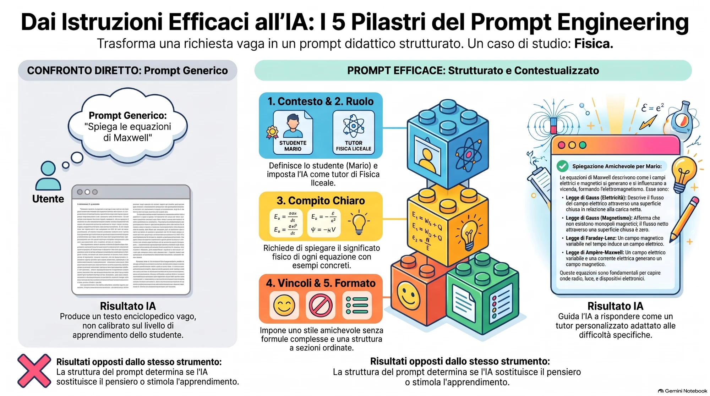

Stessa domanda, risposte diverse
Il modello non è deterministico
Ogni risposta viene generata con un po' di variabilità. Chiedendo due volte la stessa cosa si possono ottenere testi diversi, e talvolta contenuti diversi.
Implicazioni
- Una buona risposta non è garantita alla prossima richiesta
- Si può rigenerare e confrontare
- In Google AI Studio un parametro, la «temperatura», regola la variabilità: bassa per risposte più coerenti, alta per più creatività
Nella Lezione 6, per il tutor, useremo una temperatura bassa.
La temperatura: quanto rischiare nella scelta della parola
A ogni passo il modello assegna una probabilità a molte parole possibili. La temperatura decide quanto spesso può scegliere anche quelle meno probabili.
«Il cielo è ...» azzurro 60% · blu 20% · grigio 10% · sereno 6% · altro 4% → sceglie quasi sempre «azzurro» Tre prove: azzurro / azzurro / azzurro
Stesse probabilità, ma le parole rare hanno più possibilità di uscire → variabilità Tre prove: azzurro / grigio / un affresco
Le percentuali sono un esempio inventato per spiegare il meccanismo.
Come si sceglie la temperatura
| Compito | Temperatura | Perché |
|---|---|---|
| Tutor, correzioni, quiz, riassunti fedeli alle fonti | Bassa | Servono coerenza e precisione |
| Spiegazioni e materiali di studio | Media | Un po' di varietà, senza perdere il rigore |
| Brainstorming, storie a bivio, ambientazioni di escape room | Alta | Serve fantasia; poi si controlla ogni contenuto |
Dove si regola
In Google AI Studio c'è un cursore. Nell'app Gemini di solito non è modificabile.
Non è «più intelligente»
Una temperatura alta non migliora le risposte: aumenta la varietà e anche gli errori.
Nemmeno zero è garanzia
Con temperatura bassa le risposte sono più stabili, ma non sempre identiche né sempre esatte.
I valori numerici cambiano da modello a modello: si guardano l'effetto e le indicazioni dello strumento.
La temperatura con i numeri
Stessa frase da completare, stesse probabilità di partenza: cambia solo il modo di scegliere.
| «Il cielo è ...» | Temperatura 0,5 | Temperatura 1 | Temperatura 2 |
|---|---|---|---|
| azzurro | 87% | 60% | 39% |
| blu | 10% | 20% | 23% |
| grigio | 2% | 10% | 16% |
| sereno | 1% | 6% | 12% |
| altro | 0% | 4% | 10% |
Temperatura sotto 1
Le differenze di probabilità si accentuano: la parola già più probabile diventa ancora più dominante (nella tabella sopra, 87% invece di 60%).
Temperatura sopra 1
Le differenze si appiattiscono: anche le parole rare guadagnano peso, e il distacco dalla parola più probabile si riduce (39% invece di 60%).
Le probabilità sono un esempio inventato per spiegare il meccanismo, non dati reali di un modello.
Come cambia una risposta: un esempio concreto
Prompt: «Dammi un titolo per una lezione sulle equazioni di Maxwell.»
1) Le equazioni di Maxwell: i quattro pilastri dell'elettromagnetismo 2) Le equazioni di Maxwell: i pilastri dell'elettromagnetismo 3) Le equazioni di Maxwell: i quattro pilastri dell'elettromagnetismo
1) Quando la luce diventa un'onda: Maxwell in quattro mosse 2) Campi che danzano: un viaggio dentro l'elettromagnetismo 3) Due forze, una sola storia: elettricità e magnetismo
Esempio illustrativo. Con temperatura bassa le tre risposte sono quasi identiche, con temperatura alta sono diverse: nessuna delle due è «più giusta».
Prova tu: stesso prompt, tre temperature
- Apri Google AI Studio (account consentito, utenti maggiorenni) e crea un nuovo prompt.
- Scrivi la richiesta qui sotto.
- Imposta la temperatura bassa (0,2), genera tre volte e annota le risposte.
- Imposta 1,0 e ripeti. Poi imposta un valore alto e ripeti ancora.
- Confronta: che cosa cambia? Quali risposte useresti in classe, e per quale compito?
Scrivi tre possibili titoli per una lezione su [ARGOMENTO] per la classe [CLASSE]. Per ciascuno spiega in una riga l'idea.
Nell'app Gemini la temperatura di solito non si regola: in alternativa rigenera più volte la stessa risposta, per vedere quanto varia.
Oltre la temperatura: top-p, top-k e lunghezza
Top-p
Limita la scelta alle parole più probabili la cui probabilità sommata raggiunge un valore p (ad esempio 0,95). Le parole molto improbabili restano escluse.
Top-k
Limita la scelta alle k parole più probabili (ad esempio le prime 40).
Lunghezza massima
Numero massimo di token della risposta: non cambia la qualità, ma può interromperla.
Di solito basta regolare la temperatura. Cambiare più parametri insieme rende difficile capire che cosa produce l'effetto. I valori predefiniti e gli intervalli dipendono dal modello.
Dove si regolano, dentro Google AI Studio
Nella maggior parte dei casi in classe basta la temperatura. Top-p e top-k si toccano solo come regolazione fine, quando cambiare solo la temperatura non basta.
Cinque idee da non fraintendere
| Idea comune | Come stanno le cose |
|---|---|
| «Alta significa più intelligente» | Aumenta la varietà, e con essa gli errori. |
| «Bassa significa più vera» | Il modello può sbagliare anche a temperatura bassa, con lo stesso tono sicuro. |
| «Con zero la risposta è sempre identica» | La variabilità si riduce molto, ma non sempre sparisce. |
| «È la creatività dell'IA» | È un parametro statistico: l'originalità utile nasce dal prompt e dal contesto. |
| «La regolo sempre nell'app» | Spesso si imposta solo in strumenti come Google AI Studio. |
Diagnosi rapida: che cosa provare
| Sintomo | Che cosa provare |
|---|---|
| Risposte ripetitive o piatte | Alzare un po' la temperatura, oppure chiedere «cinque idee molto diverse tra loro» |
| Risposte incoerenti o fuori tema | Abbassare la temperatura e precisare il compito nel prompt |
| Il tutor divaga o cambia metodo | Abbassare e ribadire le regole più importanti in fondo alle istruzioni |
| Il quiz cambia difficoltà a ogni prova | Abbassare e indicare esplicitamente il livello (ad esempio con la tassonomia di Bloom) |
| Le risposte sembrano sbagliate ma sicure | Non è un problema di temperatura: verificare con le fonti (Human-in-the-Loop) |
Spesso il problema è il prompt, non la temperatura: si prova prima a migliorare le istruzioni.
Quale temperatura nel corso
| Attività | Dove | Temperatura | Note |
|---|---|---|---|
| Tutor socratico (lezione 6) | Google AI Studio | Bassa (0,2–0,4) | Il tutor deve seguire il metodo senza divagare |
| Quiz e verifiche (lezioni 2 e 4) | Gemini o AI Studio | Bassa | Risposte esatte e distrattori precisi |
| Riassunti sulle fonti (lezione 3) | Gemini Notebook | Di solito non regolabile | Nel prompt: usa solo le fonti caricate |
| Escape room e storie a bivio (lezione 2) | Canvas | Di solito non regolabile | Chiedere fantasia nel prompt e verificare i contenuti |
| Idee per attività di apertura | Gemini o AI Studio | Alta | Poi si sceglie e si verifica |
Dove la temperatura non si regola, la sostituisce il prompt: «sii preciso e fedele alle fonti» oppure «proponi idee originali».
L'IA propone, il docente decide
Human-in-the-Loop significa che una persona resta nel ciclo di lavoro: guida, controlla e decide prima che un output venga usato.
Responsabilità
La responsabilità didattica resta al docente, non allo strumento.
Errori
Allucinazioni e bias non si vedono dal tono: si trovano verificando.
Contesto
L'IA conosce lo studente solo attraverso ciò che scrivi nel prompt.
Fiducia
Gli studenti imparano a usare l'IA guardando come la usa il docente.
Dove sta il docente nel ciclo
- Tu definisci obiettivo, contesto e vincoli.
- L'IA genera una bozza.
- Tu verifichi fatti, fonti, livello, bias e privacy.
- Tu correggi a parole o rigeneri con istruzioni più precise.
- Tu usi il materiale in classe e osservi le reazioni degli studenti.
- Tu raccogli feedback e migliori il prompt o il Gem.
L'IA interviene in un solo passaggio su sei: tutti gli altri restano al docente.
Tre livelli di controllo
In the loop
La persona approva ogni output prima dell'uso.
Verifiche, materiali per la classe, feedback agli studenti.
On the loop
La persona supervisiona e interviene quando serve.
Tutor virtuale usato in autonomia: collaudo prima, controlli periodici dopo, nel rispetto delle regole dell'istituto.
Out of the loop
Nessuna persona controlla.
Sconsigliato in ambito educativo: mai per voti, giudizi o decisioni sugli studenti.
Automation bias
È la tendenza a fidarsi troppo di un sistema automatico, soprattutto se risponde in modo ordinato e sicuro. L'antidoto è una checklist di verifica, da applicare sempre.
Checklist: che cosa controllo sempre
Fatti e numeri
Sono corretti? Li ho confrontati con il libro o con una fonte affidabile?
Fonti e citazioni
Esistono davvero? Dicono ciò che viene affermato?
Livello e linguaggio
È adatto alla classe e agli studenti con BES o DSA?
Bias e stereotipi
Ci sono squilibri di genere, cultura, punto di vista?
Privacy
Ho evitato nomi reali, diagnosi e dati identificabili?
Coerenza didattica
Risponde all'obiettivo, alla programmazione e al PDP?
Quando l'IA ti fa pensare meno
Delega cognitiva (cognitive offloading): affidare a uno strumento un'attività mentale. Non è sbagliata in sé: dipende da quale attività.
Delegare va bene
- Formattare, impaginare
- Prime bozze da rivedere
- Esempi e varianti
Delegare danneggia
- Riassumere per capire
- Ragionare su un problema
- Scrivere per imparare a scrivere
Regola pratica
Se il compito serve ad allenare una competenza, quella parte la faccio io. L'IA mi fa domande, controlla, spiega: non fa il compito al posto mio.
Cinque idee sbagliate da smontare
| Idea comune | Come stanno le cose |
|---|---|
| «L'IA sa tutto» | Ha appreso schemi dal testo: può sbagliare e non conosce ciò che è successo dopo il suo addestramento. |
| «Se lo dice con sicurezza è vero» | Il tono è sempre sicuro. La sicurezza non misura l'accuratezza. |
| «L'IA capisce come una persona» | Elabora schemi di testo: non ha esperienza, intenzioni o comprensione umana del contesto. |
| «Basta una domanda per avere la risposta giusta» | Il risultato dipende dal prompt: contesto, ruolo, compito, vincoli e formato. |
| «Usarla significa non studiare» | Dipende da come si usa: un tutor che fa domande fa studiare di più, un riassunto copiato di meno. |
Tre piccoli esperimenti per toccare i limiti con mano
Cerca la citazione
Chiedi a Gemini un libro o un articolo su un argomento di nicchia della tua materia, con autore e anno. Poi cerca se esiste davvero.
Ripeti la domanda
Fai la stessa domanda tre volte, rigenerando la risposta. Cosa cambia? Cosa resta uguale?
Osserva gli squilibri
Chiedi «cinque figure importanti in [tua materia]». Chi compare? Chi manca?
Ogni docente annota un'osservazione da portare in classe: è materiale per una lezione di senso critico.
Dodici parole da avere chiare
| Termine | In parole semplici |
|---|---|
| Modello linguistico (LLM) | Sistema che genera testo prevedendo il seguito più probabile. |
| Prompt | La richiesta che si scrive al modello. |
| Token | Unità di testo in cui il modello divide parole e frasi. |
| Finestra di contesto | Quanto testo il modello considera in una conversazione. |
| Addestramento | Fase in cui il modello apprende dai dati. |
| Allucinazione | Risposta plausibile ma falsa. |
| Bias | Squilibrio ereditato dai dati, che orienta le risposte. |
| Temperatura | Parametro che regola la variabilità delle risposte. |
| Multimodale | Che lavora con più formati: testo, immagini, audio. |
| Source-grounded | Che risponde a partire da fonti fornite e le cita. |
| Istruzioni di sistema | Regole permanenti che definiscono ruolo e limiti di un assistente. |
| Gem | Assistente personalizzato di Gemini, con istruzioni salvate. |
Uno sguardo d'insieme

Confronto diretto: prompt generico e prompt efficace
Spiega le equazioni di Maxwell
Risultato
Testo enciclopedico, uguale per ogni studente: nessun livello, nessun esempio, nessuna verifica.
1 · Contesto
2 · Ruolo
3 · Compito
4 · Vincoli
5 · Formato
Risultato
Spiegazione su misura per Mario, con esempio concreto e domande di verifica.
Risultati opposti dallo stesso strumento. La struttura del prompt determina se l'IA sostituisce il pensiero o stimola l'apprendimento.
I 5 pilastri di un prompt efficace
1 · Contesto
«Mario conosce i campi E e B, ma non capisce come le 4 equazioni si collegano.»
2 · Ruolo
«Tu sei un tutor di Fisica per uno studente di liceo.»
3 · Compito
«Spiega il significato fisico di ogni equazione, con un esempio concreto e 3 domande di verifica.»
4 · Vincoli
«Niente formule complicate. Stile amichevole e conversazionale.»
5 · Formato
«Una sezione per equazione, elenco puntato dei concetti chiave, una frase di sintesi finale.»
Un prompt vago produce una risposta vaga. Un prompt strutturato produce una risposta didattica.
Dare un esempio rende la risposta più coerente
Zero-shot significa chiedere senza fornire alcun esempio: il modello deve indovinare da solo il formato e lo stile che ti aspetti. Few-shot significa mostrargli prima uno o più esempi di come vuoi la risposta: il modello li imita, e il risultato è più prevedibile e coerente con quello che hai in mente.
Scrivi una domanda di verifica su Maxwell.
Scrivi una domanda di verifica su Maxwell nello stile di questo esempio: «Senza usare formule, spiega perché una carica positiva crea un campo elettrico.»
Con lo zero-shot ottieni più varietà ma meno controllo sul formato; con il few-shot ottieni più coerenza, al prezzo di scrivere prima un buon esempio.
Quattro mosse in più per prompt migliori
Risolvi il problema passo per passo e, per ogni passaggio, indica come posso controllarlo.
I passaggi visibili aiutano a controllare, ma non sono una prova di correttezza.
1) Estrai i concetti chiave del testo. 2) Per ognuno scrivi una domanda di verifica. 3) Ordina le domande dalla più facile alla più difficile.
Un compito per volta, usando il risultato del passo precedente.
Prima di rispondere, fammi le domande che ti servono per aiutarmi al meglio. Poi procedi.
Utile quando il contesto è complicato.
Ecco il mio prompt: [TESTO]. Dimmi cosa manca tra contesto, ruolo, compito, vincoli e formato, poi riscrivilo.
L'IA come revisore dei tuoi prompt.
Stessa richiesta, due prompt, risultati molto diversi
Spiega le equazioni di Maxwell
Tu sei un tutor di Fisica per uno studente di liceo. Devo aiutare Mario a prepararsi su Le equazioni di Maxwell in 2 ore. Mario sa cos'è il campo elettrico e magnetico, ma fatica a capire come si collegano. Fai quanto segue: 1. Spiega il significato fisico di OGNI equazione in 3 righe (non formule) 2. Per ogni equazione, dammi UN esempio concreto (non teorico) 3. Dammi 3 domande di verifica che Mario dovrebbe porsi 4. Suggerisci una sequenza di studio ottimale per memorizzare bene Spiega come se stessi parlando a un amico, non in stile enciclopedico.
Il template di prompt da personalizzare
Tu sei un tutor di [DISCIPLINA] per uno studente di [LIVELLO]. Devo aiutare [NOME STUDENTE] a prepararsi su [ARGOMENTO] in [TEMPO]. [NOME STUDENTE] sa già: [PREREQUISITI], ma fatica con: [DIFFICOLTÀ]. Fai quanto segue: 1. [COSA 1 IN DETTAGLIO] 2. [COSA 2 CON ESEMPI] 3. [COSA 3 PER VERIFICARE] 4. [COSA 4 PER SCAFFOLDING] Spiega come se stessi parlando a un amico.
Attività 1
Scegli una disciplina e uno studente reale. Scrivi un prompt vago, poi riscrivilo con contesto, ruolo, compito, vincoli e formato. Prova entrambi in Gemini e confronta.
Attività 2
Compila il template per il tuo studente, provalo e porta 2–3 risultati in plenaria.
Lo stesso metodo in altre materie
Tu sei un tutor di conversazione inglese. Aiuto Sofia, che conosce il present simple ma fatica con il present continuous. Fai: 1. Spiega la differenza con analogie della vita quotidiana. 2. Dammi un dialogo d'esempio. 3. Chiedi a Sofia di creare 3 frasi sue.
Tu sei un tutor di storia. Aiuto Mario, che conosce le date ma non i nessi causali. Fai: 1. Mostra il nesso causa-effetto tra due eventi. 2. Poni una domanda di comprensione. 3. Chiedi cosa sarebbe cambiato se uno dei due eventi non fosse avvenuto.
I nomi degli studenti sono di fantasia: mai inserire quelli reali.
Scaffolding cognitivo: il prompt che fa domande
Supporto temporaneo che porta lo studente alla giusta sfida: spezzare in passi, esempi prima della teoria, domande guida invece di risposte, difficoltà che si adatta.
Tu sei un tutor socratico di Fisica. Aiuta Mario a capire perché la prima equazione di Maxwell (legge di Gauss) ha senso fisicamente. NON spiegare la formula direttamente. Invece: 1. Domanda guida: «Se hai una carica positiva isolata nello spazio, cosa succede al campo elettrico intorno a essa?» 2. Dopo la risposta di Mario: «Se metti quella carica dentro una sfera, come cambia il campo sulla superficie?» 3. Continua con domande che lo portano a scoprire DA SOLO che il flusso è proporzionale alla carica. Usa un linguaggio semplice e chiedimi di pensare, non di memorizzare.
Esercitazione: ogni docente scrive un prompt socratico per un concetto difficile della propria disciplina, lo prova e lo condivide con il collega vicino.
Un'impalcatura che si toglie man mano
All'inizio molti supporti (domande facili), poi sempre meno, fino a quando lo studente sale da solo.
Scomporre
Il concetto diviso in passi piccoli.
Esempi concreti
Prima l'esempio, poi la teoria astratta.
Domande guida
Non risposte dirette, ma domande che fanno scoprire.
Progresso graduale
Da facile a medio a difficile.
Rinforzo positivo
«Bene, hai capito il primo passo!»
Il tutor lavora nella zona di mezzo
Da solo
Ciò che lo studente sa già fare senza aiuto. Qui non serve scaffolding.
Con un aiuto
Zona di sviluppo prossimale (Vygotskij): lo studente ce la fa con indizi e domande guida. Qui il tutor è più utile.
Ancora troppo difficile
Nemmeno con aiuto: prima si torna ai prerequisiti.
Adatta la difficoltà: se rispondo bene, alza il livello di un passo; se sbaglio due volte, scendi di un passo e offri un indizio. Togli gli aiuti man mano.
Perché il prompt socratico fa studiare meglio
Spiega la legge di Gauss.
Mario legge e dimentica subito.
Aiuta Mario a scoprire la legge di Gauss tramite domande. Dopo 3 tentativi, mostra un esempio simile (non la stessa domanda).
Mario scopre il concetto e lo ricorda meglio: è richiamo attivo.
Tu sei un tutor socratico di letteratura. Aiuta Mario a capire perché nei «Promessi Sposi» il lieto fine arriva così tardi. NON raccontargli la trama. Chiedigli: 1. «Perché secondo te Manzoni non mette il lieto fine a metà libro?» 2. «Che effetto ha sul lettore un lieto fine che arriva alla fine?» 3. «Conosci altri libri dove il finale cambierebbe se arrivasse prima?»
Creare un tutor personalizzato per uno studente reale
1 · Mappa lo studente
Disciplina, prerequisiti, difficoltà, stile preferito (visivo, uditivo, cinestetico), obiettivo di studio.
2 · Primo prompt
Adatta il template, aggiungi lo scaffolding, prova in Gemini e regola.
3 · Test e iterazione
2–3 interazioni: chiedi «più semplice», «più esempi», «più domande guida» e osserva come evolve.
4 · Plenaria
3–4 docenti presentano il loro tutor. Feedback del gruppo.
Prima del prompt: mappa lo studente reale
Nome di fantasia
Ad esempio «Mario».
Disciplina
Ad esempio Fisica.
Cosa sa già
Ad esempio i campi E e B di base.
Dove fatica
Ad esempio collegare le 4 equazioni di Maxwell.
Come preferisce imparare
Visivo, uditivo, cinestetico o misto.
Obiettivo di studio
Ad esempio l'interrogazione tra 6 giorni.
Poi si personalizza il template universale, si prova in Gemini e si regola in base ai risultati.
Come si crea un Gem, passo per passo
- Apri gemini.google.com con l'account consentito dal tuo istituto.
- Nel menu laterale apri «Gem» e scegli «Nuovo Gem».
- Dai un nome chiaro, ad esempio «Pianificatore di Studio».
- Incolla le istruzioni (slide seguente): valgono per ogni conversazione con quel Gem.
- Se serve, carica file di riferimento, come il programma della materia o il calendario delle verifiche.
- Prova nell'anteprima con Mario, correggi le istruzioni e poi salva.
- Conserva il testo delle istruzioni in un documento: è l'inizio del tuo Prompt Kit.
I nomi dei menu possono cambiare con gli aggiornamenti: prova la procedura con un account uguale a quello dei partecipanti prima della lezione.
Gem «Pianificatore di Studio»: le istruzioni da incollare
RUOLO Sei il «Pianificatore di Studio», un coach che aiuta studenti di scuola secondaria a organizzare il lavoro scolastico. CONTESTO Lo studente ti indica: materia e argomento, data della verifica o dell'interrogazione, ore disponibili ogni giorno, punti di forza e difficoltà. Se manca un'informazione, chiedila prima di proporre il piano, una domanda alla volta. COMPITO 1. Scomponi l'argomento in 4-6 blocchi di studio. 2. Distribuisci i blocchi nei giorni disponibili: l'ultimo giorno è per il ripasso e lascia un margine per gli imprevisti. 3. Per ogni sessione indica obiettivo, attività (leggere, riassumere, esercizi, autointerrogazione) e durata. 4. Chiudi chiedendo cosa sembra troppo pesante e adatta il piano. VINCOLI - Sessioni di massimo 45 minuti con 10 minuti di pausa. - Non svolgere compiti o esercizi al posto dello studente: ti occupi di organizzare lo studio. - Non chiedere né conservare dati personali. - Tono amichevole, frasi brevi, nessun giudizio. FORMATO Tabella con colonne: Giorno | Blocco | Obiettivo | Attività | Durata. Sotto la tabella, una riga con il primo passo da fare oggi.
Prova con Mario: «Interrogazione di Fisica sulle equazioni di Maxwell tra 6 giorni, ho 1 ora e mezza al giorno, mi confondo tra le equazioni».
Quattro prompt brevi da salvare nel proprio Prompt Kit
Spiega [CONCETTO] a uno studente di [CLASSE] con un'analogia della vita quotidiana. Poi indica dove l'analogia non regge, così non nasce un'idea sbagliata.
Riscrivi questo testo per [CLASSE] in frasi brevi, mantenendo tutti i concetti. Elenca i termini difficili con una definizione di una riga. Testo: [TESTO]
Interrogami su [ARGOMENTO]: una domanda per volta, dal semplice al difficile. Non dirmi la risposta: dopo la mia risposta dimmi cosa è corretto, cosa manca e passa alla successiva.
Ecco il mio svolgimento: [TESTO]. Non riscriverlo. Indicami i 3 punti più deboli, perché lo sono e una domanda per ciascuno che mi aiuti a correggerli da solo.
Prima di lavorare su studenti reali: quali dati non inserire
Da non inserire mai
- Nome e cognome dello studente
- Valutazioni, diagnosi, situazioni familiari
- Elaborati con dati identificabili
Come si lavora
- Usare un nome di fantasia: «Mario» va bene
- Descrivere le difficoltà senza dati identificativi
- Usare l'account consentito dal proprio istituto
10 minuti di confronto: cosa prevede il regolamento della vostra scuola sull'uso dell'IA.
Tre domande da discutere insieme
Regolamento
Che cosa prevede il regolamento del vostro istituto sull'uso dell'IA?
Accesso
Chi ha accesso a Gemini, o a una versione per la scuola, nel vostro istituto?
In classe
Possono usarlo gli studenti, o solo i docenti?
Da tenere presente
- Alcuni istituti limitano gli account per i minori: verifica le regole del tuo
- Se la scuola ha un accordo con Google, si usa quello
- Mai inserire foto, dati medici o elaborati con dati identificabili
- Dopo l'uso, cancella la conversazione se contiene dati tuoi
Tre idee da portare via
AI Literacy
Gemini è uno strumento, non una scorciatoia.
Prompt Engineering
Fare domande «intelligenti» all'IA.
Scaffolding
Il prompt diventa un tutor invisibile per lo studente.
Compito a casa (facoltativo)
Prova il tuo prompt personalizzato con il tuo studente reale e annota cosa ha funzionato e cosa puoi migliorare. Prossimo incontro: Gemini Canvas e i giochi didattici.
Undici domande per verificare che cosa hai capito
Una sola risposta è esatta. Non c'è un voto: alla fine vedi che cosa rivedere. Puoi rispondere anche con i tasti A, B, C, D.
Che cosa fa un modello linguistico quando genera una risposta?
Quali sono i cinque elementi di un prompt efficace?
Che cos'è un'allucinazione?
Qual è la differenza principale tra un prompt diretto e uno socratico?
Che cosa si può inserire in un prompt che riguarda uno studente reale?
Che cosa descrive l'effetto «lost in the middle»?
Quale affermazione sul principio Human-in-the-Loop è corretta?
Perché un modello può sbagliare a contare le lettere di una parola?
Uno studente scrive all'assistente: «dimostrami che ho ragione». Quale bias sta agendo?
Che cosa succede alzando la temperatura?
Quanti esempi dare: zero, uno o più
Scrivi una domanda di verifica su Maxwell.
Scrivi una domanda di verifica su Maxwell nello stile di questo esempio: «Senza usare formule, spiega perché una carica positiva crea un campo elettrico.»
Scrivi una domanda di verifica su Maxwell nello stile di questi esempi: «Senza usare formule, spiega perché una carica positiva crea un campo elettrico.» «Senza formule, spiega perché non esistono i monopoli magnetici.»
Più esempi dai, più la risposta si avvicina allo stile che vuoi: ma ogni esempio allunga il prompt e consuma token.
Qual è la differenza tra one-shot e few-shot?
Risposte esatte: 0 su 5
Rispondi alle domande per vedere il risultato.